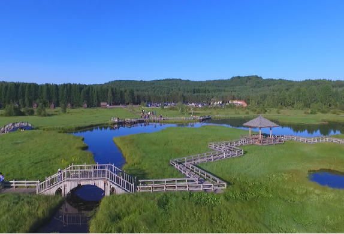

旅游业收入上下变化图

2014-2020年赛罕坝客流量变化图

自身优势
塞罕坝自然保护区具有得天独厚的地理区位优势，北京、天津等周边很多城市经济发达，人们的生活水平高，日常消费也高，人们更加注重精神上面的满足感，出门游玩的动机相对明显。塞罕坝的大地风景以其壮美、辽阔而吸引人，处处皆是绚丽的大地景观，目前塞罕坝舒适的避暑气候已经成为京津冀地区人们的热门选择。每年超过80%的游客都在夏季时来休闲避暑。当地居民的努力
当地居民与时俱进，抓住商机，利用自家的自建房或另新盖楼房改造成客栈民宿和特色饭馆，供前来游玩的旅客停足休息。装修精巧、独居特色、少数民族气息浓厚的主题客栈也随之成为了人们参观的景点，为追求更多的经济效益，经营者们会在客栈旅馆开展一些当地风俗体验，例如骑马射箭、滑草、马车游览等一些娱乐活动，娱乐性的消费也是当地居民主要收入的来源。国家政策的支持
在2022年，文化和旅游部、国家民委、国家发展改革委印发《关于实施旅游促进各民族交往交流交融计划的意见》，决定实施旅游促进各民族交往交流交融计划，以旅游业高质量发展推动各民族在空间、文化、经济、社会、心理等方面全方位嵌入、铸牢中华民族共同体意识，加强中华民族共同体建设。为响应国家政策，此举在促进当地经济的发展的同时弘扬了少数民族文化特色，使民族交融进一步加强。响应国家政策，打响脱贫攻坚战，致力于乡村振兴，在我国全面脱贫的道路上功不可没。
均衡性
经济的迅速发展，客流量的逐步增加，不肯避免地对自然环境造成一定的破坏，除了游客提高自身素质约束好自己的行为之外，更需要这个坝上长期的主人，当地居民来爱护保护它。旅店客栈的经营者们要均衡经济与环境的关系。要合理纳客，在环境可承受的范围内接待客人，不可一味地追求经济，当地政府应颁布相应法律条文，明确经营者可行使的权利以及履行的义务。塞罕坝是中国历史上唯一的皇家狩猎场。清代盛世时曾每年在此举行“木兰秋狝”大典。鼎盛时期，曾经有72围供皇家狩猎。这一辉煌的历史，至今被大家畅谈。关于“木兰秋称”的历史遗迹，则仅有非常零星的分布，更多的只能从历史典籍和故事中去寻觅。这辉煌的历史也是一大卖点，吸引着全国各地对皇家对历史感兴趣的游客前来观光消费。
-

七星湖
七星湖是一个位于河北承德的塞罕坝森林公园内的一处自然景观，也是重点旅游风景点。其以七个小湖，远远望去，排列如天上北斗而命名。
-

白烨林
白桦林就在塞罕塔的西边，这里有成片的的白桦树，银白色的挺拔树干、遮天蔽日的树叶，营造出壮阔之美，是摄影爱好者们的取景胜地。
-
木兰围场
木兰围场坝上草原，全称（塞罕达巴罕色钦）蒙语意思是“有河源的美丽的高岭”，由于一年四季景色皆宜，围场坝上一直是摄影爱好者的创作之地。